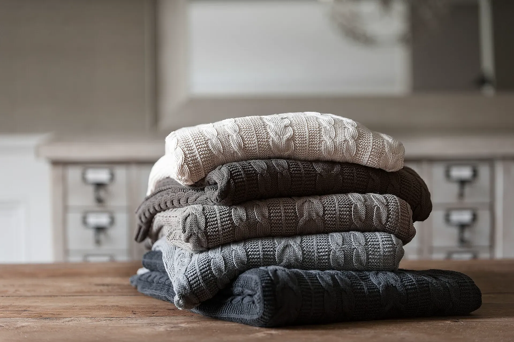
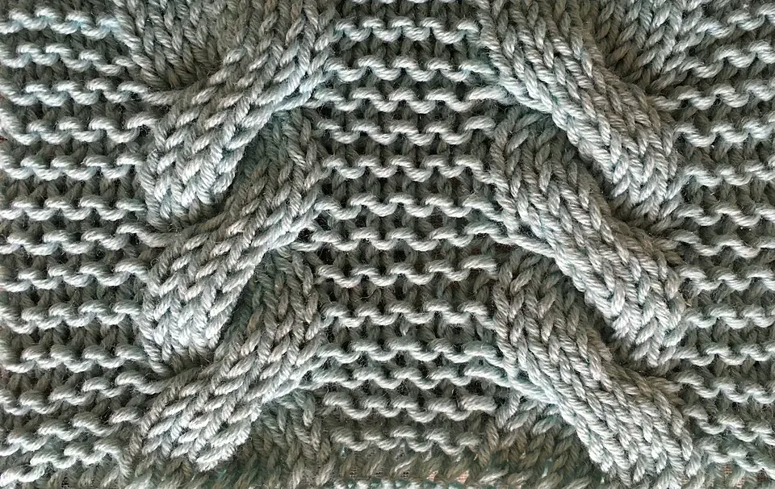
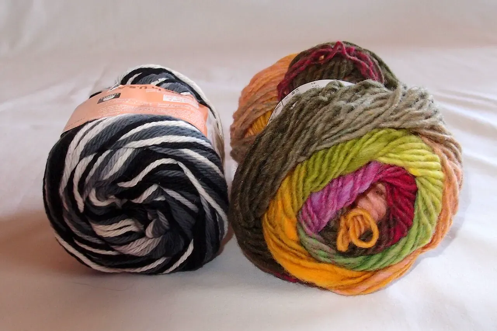
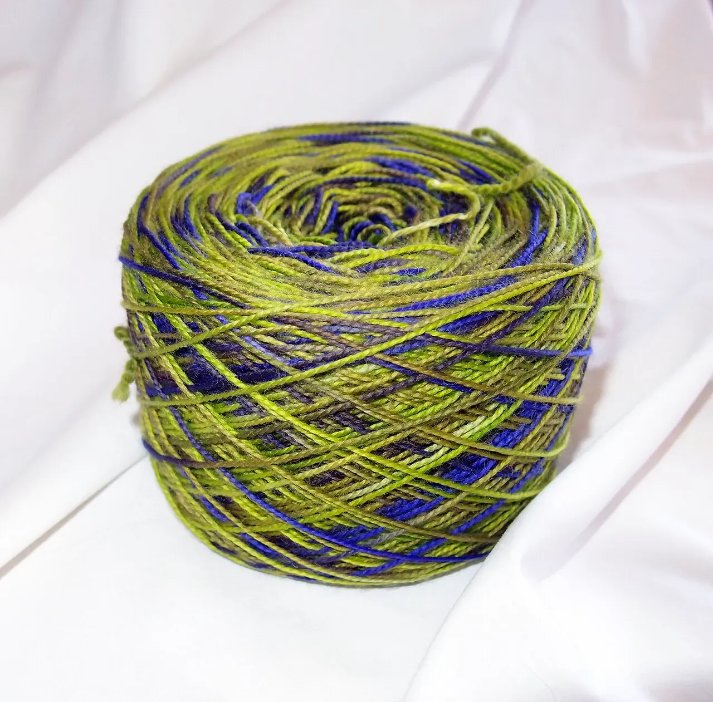
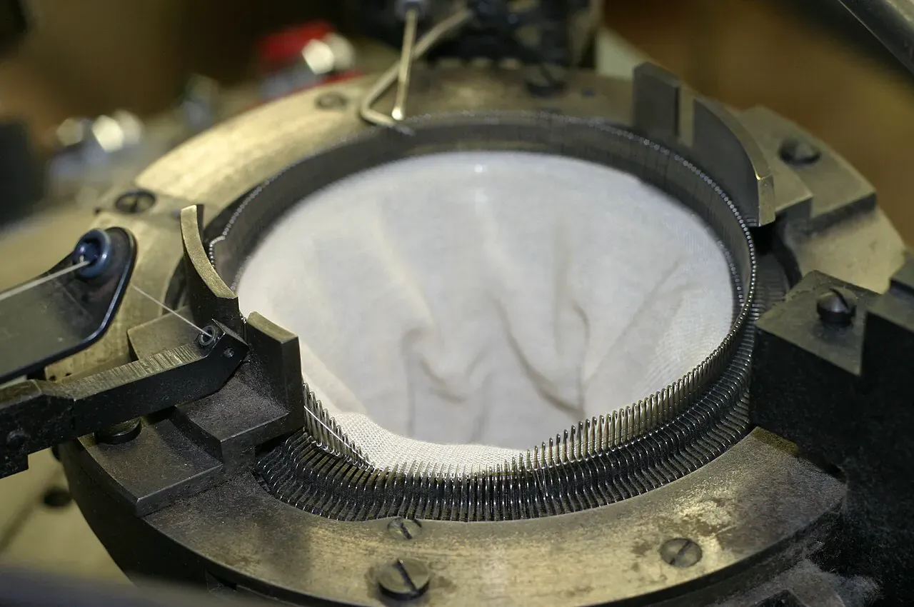
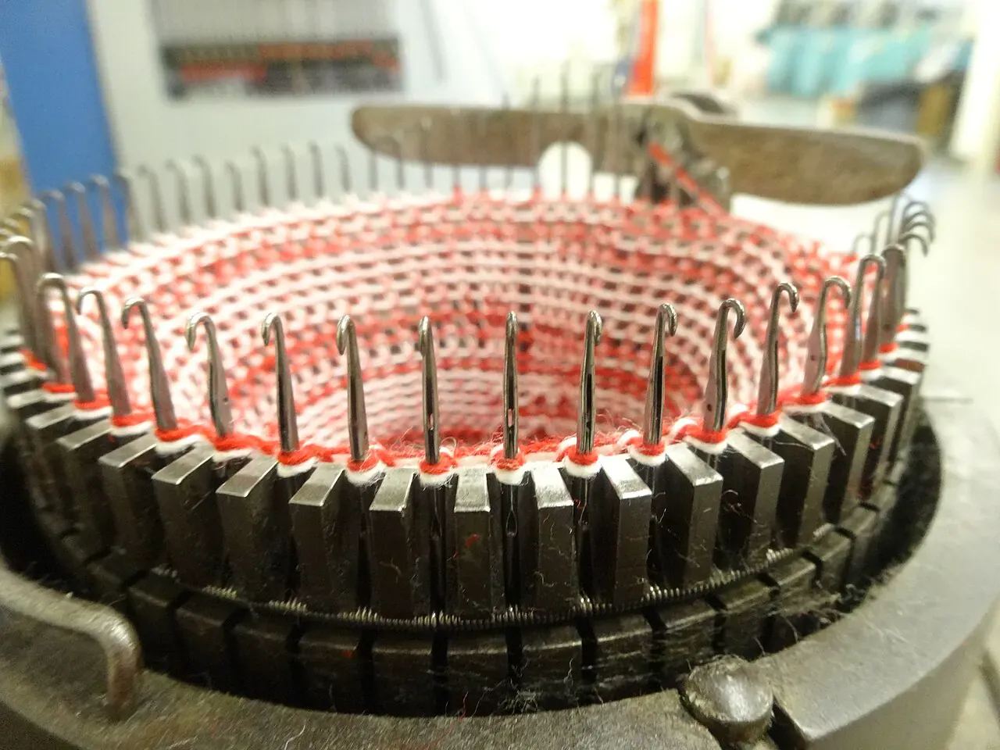
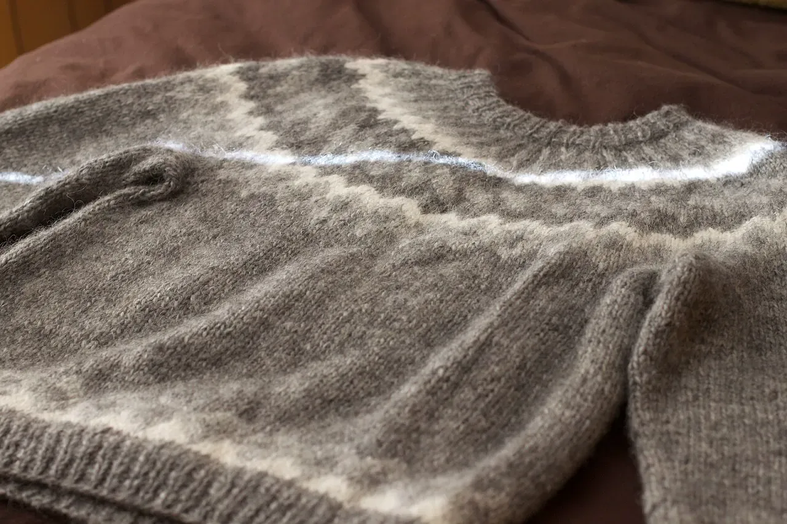
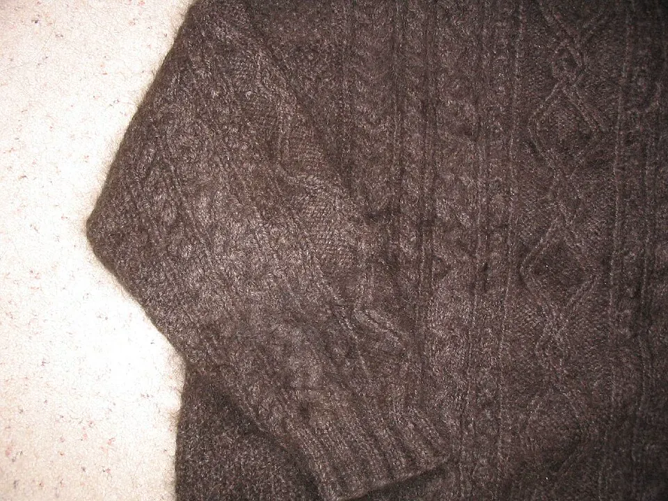

Jerséis de lana para el invierno
Tres modelos de punto grueso, de 89 € a 134 €, en tallas de la XS a la XL. Nos escribes el modelo y la talla, y te confirmamos el envío.
Tres modelos de jersey. Todos de lana, de la XS a la XL.
El punto de ochos, de cerca
Los ochos cruzan seis puntos cada ocho vueltas. Por eso el jersey abriga más que uno liso del mismo peso.
- CuerpoOchos sobre fondo de punto bobo
- Puños y bajoElástico doble
- CosturasRemalladas, sin bordes por dentro

Del ovillo al jersey
La lana llega en madejas, se devana en ovillos, pasa por la tricotosa circular y termina en el remallado de las costuras.




Tallas y cuidado
Si dudas entre dos tallas, mide un jersey que ya te quede bien y elige por el contorno de pecho.
- TallasXS a XL, pecho de 88 a 120 cm
- Lana100 %
- LavadoA mano, en agua fría

Pide tu jersey
Escríbenos el modelo y la talla. Te contestamos con el precio final y el envío.
